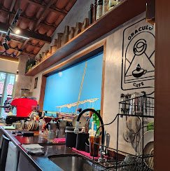
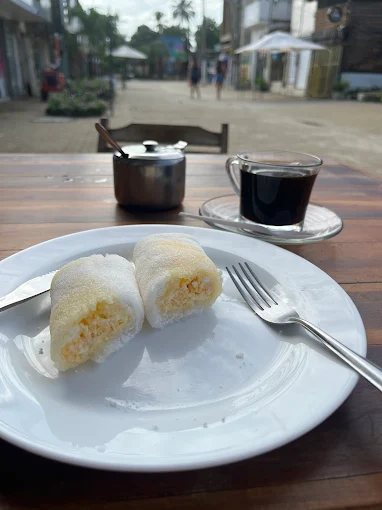

Self-service
Tempero da Casa
Comida simples e casual em esquema self-service — perfeito para o almoço sem cerimônia depois da praia.
@temperodecasadelivery_
Da pizza artesanal à alta gastronomia à beira-mar: 25 bares e restaurantes — mais os cafés que a Denise e o Gilberto indicam de olhos fechados.
Os números dos cards correspondem aos pontos do mapa. Use os filtros para achar o programa de hoje.
Comida simples e casual em esquema self-service — perfeito para o almoço sem cerimônia depois da praia.
@temperodecasadelivery_Gastronomia brasileira requintada em espaço harmonioso e aconchegante — um dos queridinhos da vila.
@salcumbucoCozinha regional cearense em ambiente acolhedor, com atendimento que faz a gente se sentir em casa.
@mariaseverinarestauranteRestaurante e pizzaria de cozinha italiana, com pratos bem elaborados e clima aconchegante.
@terramiacumbucoRestaurante, pizzaria e sushi bar: cardápio variado e pratos caprichados para agradar a mesa inteira.
@terracocumbucoBar e restaurante de pratos variados, bem elaborados e sofisticados, em ambiente aconchegante.
@mudacumbucoCozinha mediterrânea e contemporânea com pratos sofisticados — programa certo para uma noite especial.
@chevalier.restauranteHamburgueria e grill com lanches caprichados em clima descontraído.
@armadillo.burger.grillEspecialidades da culinária italiana: pizza romana e focaccia artesanal que valem a visita.
@queromaisitalianfoodGastronomia variada com um toque alemão, em espaço simples e aconchegante.
Ver no InstagramBar e restaurante de cardápio variado com toque mexicano, ambiente aconchegante e bom atendimento.
@madametequilabarCozinha variada — inclusive vegetariana — e drinks espetaculares em ambiente alegre e aconchegante.
@beijaflorcumbucoBoa variedade de hambúrgueres, além de lanches e petiscos mexicanos.
@anguscumbucoRestaurante e bistrô de pratos bem elaborados, em ambiente requintado e aconchegante.
@lecharmecumbucoPizzas e pratos bem preparados em ambiente aconchegante, no coração da vila.
@cantinhodapizzacumbucoHambúrgueres, petiscos e drinks ao som de música — muitas vezes ao vivo. Clima descontraído garantido.
@ansisbarcumbucooficialPizzas variadas com massa de pão e ingredientes de primeira linha.
@kitepizza_Restaurante à la carte com opções variadas de hambúrgueres artesanais.
@eita_foodGastronomia diversificada, pratos deliciosamente preparados e boa variedade de lanches e petiscos em ambiente acolhedor.
Refeições, petiscos e lanches variados em ambiente aconchegante.
@viracoposcumbucoRefeições variadas e bem elaboradas, pizzas e petiscos em local simples e descontraído.
@varandasdocumbucoPetiscos, salgados e drinks deliciosos, tudo em ambiente descontraído.
@rusticbar.oficialPratos contemporâneos e drinks variados em ambiente agradável, com ótimo atendimento.
@lasalacumbucoGastronomia variada muito bem preparada e drinks deslumbrantes em um ambiente mágico.
@secretspotcumbucoCarnes e peixes em pratos muito bem elaborados, em ambiente descontraído e com bom atendimento.
@salcumbucoCafés especiais, tapiocas e cuscuz do jeitinho cearense — três paradas obrigatórias.

Cafés especiais feitos com um toque de arte, lado a lado com sanduíches, cuscuz, tapiocas, bolos e quiches que fazem dançar de alegria.
@oraculocafecumbuco
Café tradicional, cuscuz, tapiocas, salada de frutas fresquinha e sucos naturais — o cantinho perfeito para um café da manhã delicioso e aconchegante.
@cafedavillacumbuco
Padaria no centrinho do Cumbuco para se deliciar com um cafezinho divino, acompanhado de tapioca ou cuscuz do jeitinho que você gosta.

Todos esses sabores ficam a poucos passos do seu loft — e a Denise e o Gilberto adoram indicar o lugar certo para cada ocasião.